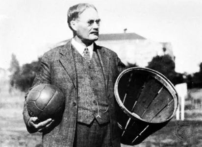

History
In early December 1891, James Naismith, a Canadian physical education teacher at Springfield College in USA invented an indoor game called basketball. He invented the sport to keep his students from becoming bored during the winter. Naismith wrote the basic rules and then nailed a peach basket onto a 10-foot tall pole. Unlike modern basketball hoops, the bottom of the peach-basket was still there, so after a point was scored, somebody had to get the ball out of the basket with a long stick. Over time, people made a hole at the bottom of the basket so the ball could go through more easily.
